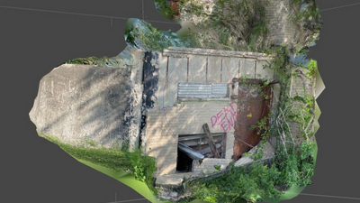

Jeff Carter: The Singer Pavilion Project
Since 2020, the artist Jeff Carter has developed an extensive body of work exploring the site, history, and significance of the Singer Pavilion–the last remaining building of the former Michael Reese Hospital complex in Bronzeville and a design collaboration by architect Walter Gropius, the founder of the Bauhaus School. This exhibition debuts the 11 resulting artworks including sculptures, digital images, sound works, and installations. Several artworks in the exhibition are made using materials extracted from the abandoned site: a waiting room chair, vinyl records, and plants that have reclaimed the building and surrounding landscape–all collected during the artist’s many visits. The excavated materials, transformed into sculptures, conjure both the events that happened in the building during its active years as a psychiatric institute (1948-2009) and the building’s life after the hospital’s closure. A series of zines by artists with connections to the hospital and its surrounding community are also featured.
Together, the works in the exhibition prompt critical reflection on the Modernist promise of social progress, and considers how architectural ideals are compromised by histories of institutional failure, abandonment, and inequality.